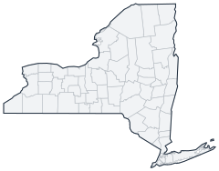

Historical county changes, 1790–1990 › New York

| Name↕ | Unit↕ | Existed↕ | FIPS↕ |
|---|---|---|---|
| Albany County | county | 1790–1990 | 36001 |
| Allegany County | county | 1810–1990 | 36003 |
| Bronx County | county | 1920–1990 | 36005 |
| Broome County | county | 1810–1990 | 36007 |
| Cattaraugus County | county | 1820–1990 | 36009 |
| Cayuga County | county | 1800–1990 | 36011 |
| Chautauqua County | county | 1820–1990 | 36013 |
| Chemung County | county | 1840–1990 | 36015 |
| Chenango County | county | 1800–1990 | 36017 |
| Clinton County | county | 1790–1990 | 36019 |
| Columbia County | county | 1790–1990 | 36021 |
| Cortland County | county | 1810–1990 | 36023 |
| Delaware County | county | 1800–1990 | 36025 |
| Dutchess County | county | 1790–1990 | 36027 |
| Erie County | county | 1830–1990 | 36029 |
| Essex County | county | 1810–1990 | 36031 |
| Franklin County | county | 1810–1990 | 36033 |
| Fulton County | county | 1840–1990 | 36035 |
| Genesee County | county | 1810–1990 | 36037 |
| Greene County | county | 1800–1990 | 36039 |
| Hamilton County | county | 1820–1990 | 36041 |
| Herkimer County | county | 1800–1990 | 36043 |
| Jefferson County | county | 1810–1990 | 36045 |
| Kings County | county | 1790–1990 | 36047 |
| Lewis County | county | 1810–1990 | 36049 |
| Livingston County | county | 1830–1990 | 36051 |
| Madison County | county | 1810–1990 | 36053 |
| Monroe County | county | 1830–1990 | 36055 |
| Montgomery County | county | 1790–1990 | 36057 |
| Nassau County | county | 1900–1990 | 36059 |
| New York County | county | 1790–1990 | 36061 |
| Niagara County | county | 1810–1990 | 36063 |
| Oneida County | county | 1800–1990 | 36065 |
| Onondaga County | county | 1800–1990 | 36067 |
| Ontario County | county | 1790–1990 | 36069 |
| Orange County | county | 1790–1990 | 36071 |
| Orleans County | county | 1830–1990 | 36073 |
| Oswego County | county | 1820–1990 | 36075 |
| Otsego County | county | 1800–1990 | 36077 |
| Putnam County | county | 1820–1990 | 36079 |
| Queens County | county | 1790–1990 | 36081 |
| Rensselaer County | county | 1800–1990 | 36083 |
| Richmond County | county | 1790–1990 | 36085 |
| Rockland County | county | 1800–1990 | 36087 |
| Saratoga County | county | 1800–1990 | 36091 |
| Schenectady County | county | 1810–1990 | 36093 |
| Schoharie County | county | 1800–1990 | 36095 |
| Schuyler County | county | 1860–1990 | 36097 |
| Seneca County | county | 1810–1990 | 36099 |
| St. Lawrence County | county | 1810–1990 | 36089 |
| Steuben County | county | 1800–1990 | 36101 |
| Suffolk County | county | 1790–1990 | |
| Sullivan County | county | 1810–1990 | 36105 |
| Tioga County | county | 1800–1990 | 36107 |
| Tompkins County | county | 1820–1990 | 36109 |
| Ulster County | county | 1790–1990 | 36111 |
| Warren County | county | 1820–1990 | 36113 |
| Washington County | county | 1790–1990 | 36115 |
| Wayne County | county | 1830–1990 | 36117 |
| Westchester County | county | 1790–1990 | 36119 |
| Wyoming County | county | 1850–1990 | 36121 |
| Yates County | county | 1830–1990 |
Note: Decimals in FIPS codes come from Forstall, who gives every county a code, including counties that no longer exist. A county abolished between 1930 and 1990 keeps the code it had. However, a county which was abolished prior to 1930 never received a code. Such a county is given the code of the county which precedes it alphabetically plus a decimal to hold its place in the list.
Source: Richard L. Forstall (1996), Population of States and Counties of the United States: 1790 to 1990, U.S. Bureau of the Census (public domain). Always check a row against the scan it links to.